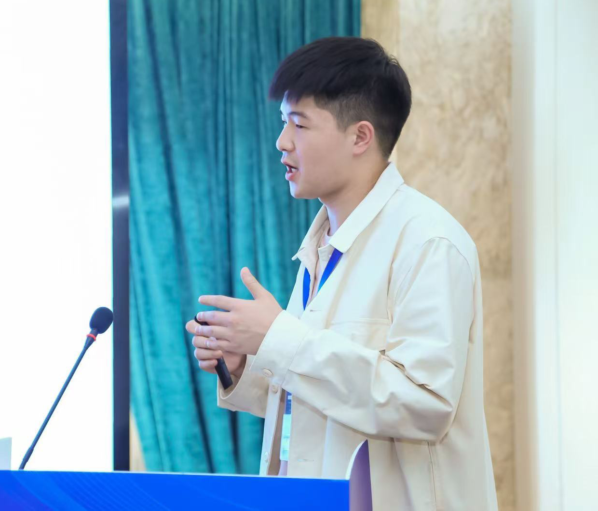

01
语义与生成式传输
研究面向图像与视频的语义表示、生成式重建及自适应传输，在有限带宽下保留真正重要的信息。
SEMANTIC & GENERATIVE TRANSMISSIONABOUT FUTURELINK
未来链路实验室（FutureLink Lab）是由通信与人工智能领域青年研究者组成的科研团队，面向下一代信息通信技术的发展需求，聚焦语义通信、深度联合信源信道编码、生成式视频传输、智能接收与新型无线环境等前沿方向。
团队致力于推动语义、信道与无线环境的协同智能，探索更加高效、可靠、自适应的 6G 通信技术。
RESEARCH PILLARS
围绕“内容—链路—环境”构建端到端的智能通信研究体系。
研究面向图像与视频的语义表示、生成式重建及自适应传输，在有限带宽下保留真正重要的信息。
SEMANTIC & GENERATIVE TRANSMISSION探索深度联合信源信道编码、轻量化接收机、信道估计与反馈，提升复杂信道下的传输可靠性。
DEEP JSCC & INTELLIGENT RECEIVERS面向 RIS、可移动与可旋转天线等新型技术，研究波束赋形、资源分配与传播环境的主动优化。
SMART RADIO ENVIRONMENTSSELECTED OUTPUTS
从语义视频传输到智能无线环境，记录团队成员的协作探索与阶段性进展。
IEEE Transactions on Wireless Communications
Jian Zou, Yifan Lian, et al.
查看论文Mengchao Guo, Jiacong Chen, Yifan Lian, et al.
成员主页Jian Zou, Jian Xiao, Wenwu Xie, et al.
查看论文Wenwu Xie, Zilong Li, Chao Yu, et al.
查看论文围绕智能接收、视频重建与无线环境形成的技术积累。
邹建 · 郭孟超 · 连一凡 等
郭孟超 · 邹建 · 连一凡 等
邹建 · 李子龙 等
OUR TEAM
不同研究背景，同一个面向未来的连接愿景。
Ph.D. Candidate · Shenzhen University
语义通信 · 深度 JSCC · 智能接收与信道反馈
Ph.D. Student · Shenzhen University
视频语义通信 · 生成式重建 · 计算机视觉

Ph.D. Student · Shenzhen University
可移动天线 · RIS · 资源分配与语义通信
Master's Student · Shenzhen University
参与下一代智能通信相关研究